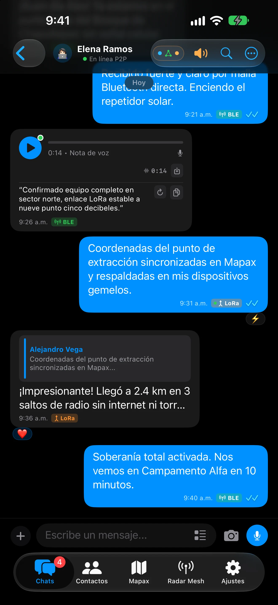

iPhone & iPad
v3.396 · TestFlight
App nativo com autoplay de voz na tela bloqueada, Mapax offline e malha Bluetooth multi-salto.
Instalar via TestFlight →Mensagens criptografadas que voam no Wi-Fi ou 5G e saltam de celular em celular via Bluetooth, Wi-Fi Direct e rádio LoRa quando a cobertura acaba.
Grátis · Sem número de telefone · Criptografia ponta a ponta · iPhone, Mac e Android

Baixe a versão oficial compatível entre Apple e Android com o mesmo protocolo criptografado.
App nativo com autoplay de voz na tela bloqueada, Mapax offline e malha Bluetooth multi-salto.
Instalar via TestFlight →Responda com teclado completo e sincronize suas conversas ponta a ponta com TwinSync.
Instalar via TestFlight →Guia passo a passo para entrar no teste fechado do Google Play ou baixar o APK direto.
Baixar para Android →Requer iOS 16+ / Android 8+ · 100% grátis
Sem configurações nem menus escondidos: o Chax detecta automaticamente o que continua ativo ao seu redor.
Com Wi-Fi ou 5G disponíveis, seus textos, áudios e mapas cruzam fronteiras via relays Nostr sem servidores centrais nem número celular.
Em estradas desertas, estádios cheios ou quedas de energia, apps dependentes de nuvem travam. O Chax aciona a malha local na hora.
Seu pacote selado avança por Bluetooth, Wi-Fi Direct ou rádio LoRa (+30 km) através de aparelhos vizinhos sem que ninguém consiga ler o conteúdo.
Alterne os modos abaixo para ver como o Chax atua no dia a dia e durante uma queda total de sinal.
TwinSync ponta a ponta.Sealed Sender) e chaves criptográficas guardadas só nos seus aparelhos.Suas chaves nascem dentro do próprio celular. Conecte contatos com QR code em 2 segundos sem expor telefone ou e-mail.
Seu aparelho ajuda vizinhos retransmitindo envelopes selados opacos em segundo plano, ajustando o consumo conforme a bateria.
Nenhum relay nem aparelho intermediário consegue abrir mensagens ou rastrear com quem você conversa.
Rápido hoje no Wi-Fi e equipado com mapas offline, áudio tático e suporte a rádio LoRa fora da rede.
Salve camadas de satélite e OpenStreetMap no aparelho, organize pontos de encontro e envie pacotes portáteis .chaxmap.
Autoplay estilo walkie-talkie por Bluetooth, malha ou internet, com transcrição local quando precisar de silêncio.

Identidade criptográfica gerada no aparelho com verificação SHA-256 e pareamento por QR cara a cara.
Grupos livres, moderados ou de alerta e sincronização direta TwinSync ponta a ponta entre celular e Mac.
Limpeza automática em 1 h, 24 h ou 7 dias, além do Protocolo de Pânico para apagamento atômico imediato.
Estime distâncias em metros sem internet e conecte antenas LoRa 915/868 MHz para cruzar montanhas ou cidades inteiras.
Deslize na horizontal para ver como o Chax responde a apagões, trilhas remotas e multidões.
Com Chax: Os celulares formam pontes opacas automáticas e propagam alertas SOS e voz na tela bloqueada.
Com Chax: Você usa o Mapax satélite baixado, pacotes .chaxmap e voz mãos-livres entre veículos ou trilheiros.
Com Chax: Salta direto entre celulares próximos no local enquanto o Radar RSSI guia você até seus amigos.
Com Chax: Zero número de telefone, sincronização local TwinSync entre Apple e Android e autopurga programável.
Mesmo protocolo criptografado, mesma malha e experiência nativa em cada sistema.
No Wi-Fi parecem iguais. Quando importam sua soberania e ficar sem sinal, não há comparação.
| Capacidade | Chax | Mensageria tradicional centralizada |
|---|---|---|
| Funciona se a rede celular e o Wi-Fi caírem | ✓ Malha BLE + Wi-Fi + LoRa | ✕ Incomunicável |
| Velocidade normal com Internet (Wi-Fi / 5G) | ✓ Tempo real multi-relay | ✓ Depende da nuvem |
| Sem número de telefone nem chip SIM | ✓ Zero dados pessoais | ✕ Obrigatório |
| Mapas de satélite e coleções offline (.chaxmap) | ✓ Integrado e compartilhável | ✕ Não existe |
| Autoplay de voz com tela bloqueada | ✓ Mesmo sem cobertura | ✕ Exige nuvem |
| Autopurga antiforense local e Rádio LoRa (+30 km) | ✓ 1h, 24h, 7d ou Pânico + LoRa | ✕ Histórico em servidor |
Sealed Sender). Nem você nem outras pontes conseguem abri-los ou ver quem enviou. A tabela adaptativa PathTable regula os ciclos BLE para proteger a bateria.
Mapax e .chaxmap) e sincronização direta criptografada TwinSync entre iPhone, iPad, Mac e Android. Se faltar sinal, alterna para mesh sozinho.
.chaxmap.
SHA-256. Você nunca precisa informar número nem vincular contas externas.
Baixe grátis em segundos e compartilhe com sua família ou grupo de viagem.